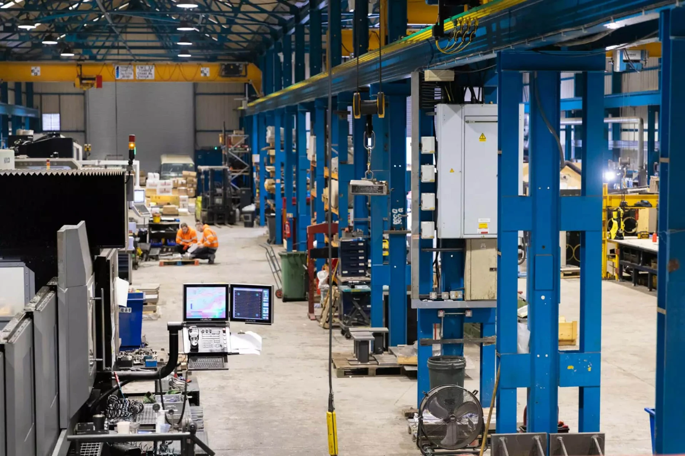
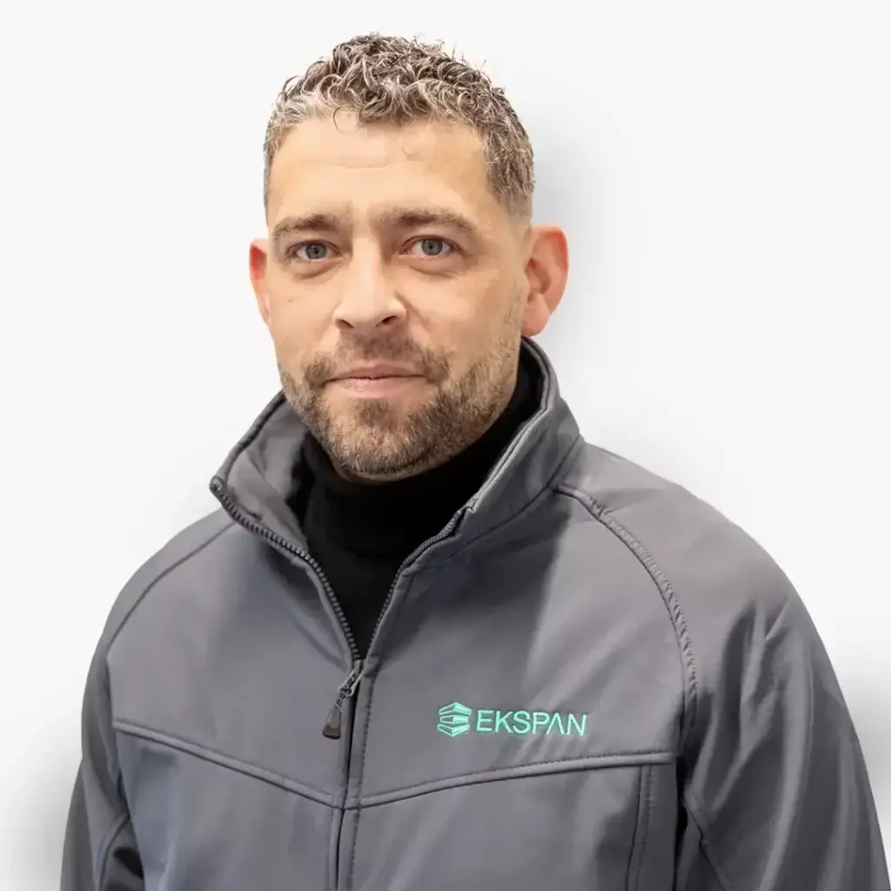
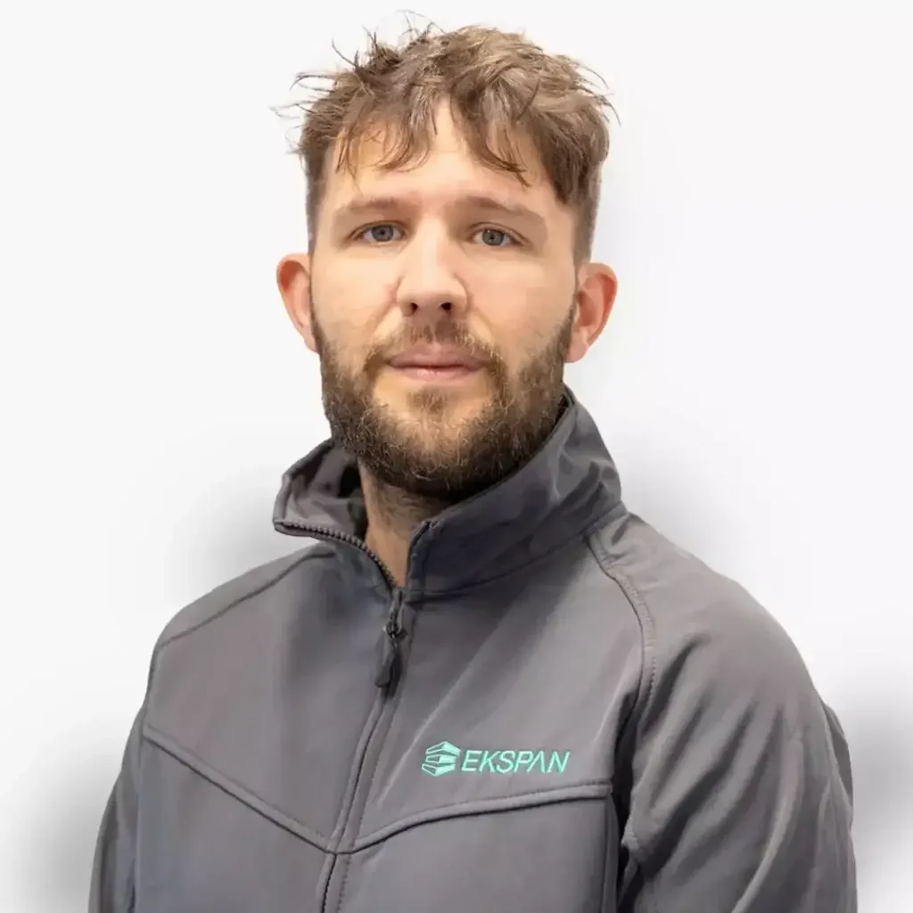
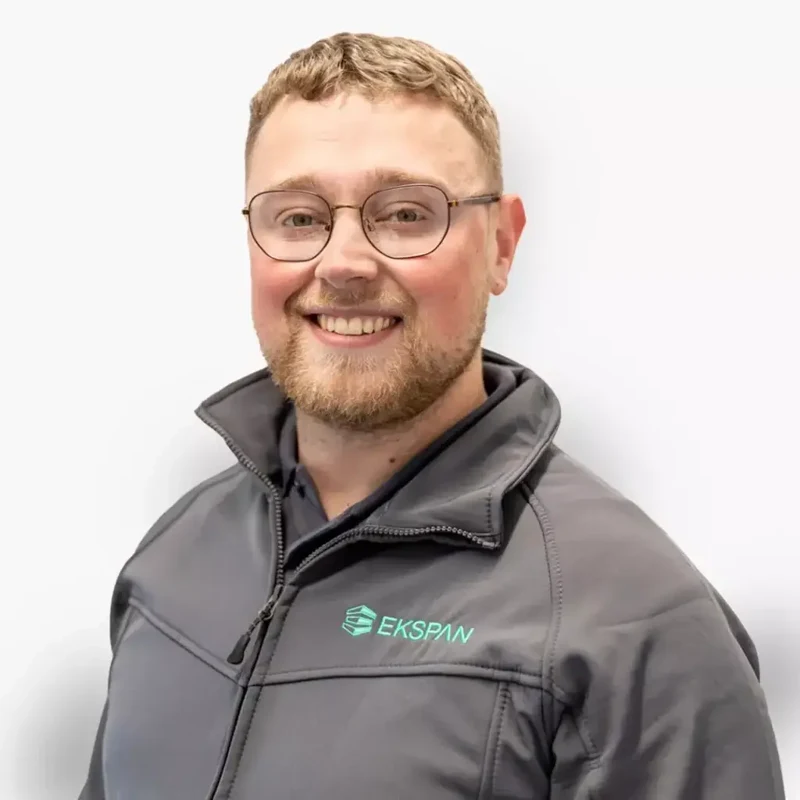

Engineering
In-house design and technical support across the product and service range.
STRUCTURAL / MECHANICAL / CIVIL ENGINEERING
From early involvement and bearing design to manufacturing and specialist work on site.

In-house design and technical support across the product and service range.
Workshop knowledge and manufacturing capability in Sheffield.
Working as supplier, specialist subcontractor or principal contractor according to the project scope.
OUR PEOPLE

Operations Director

Projects Director

Pre-Contract Sales Director
Managing Director